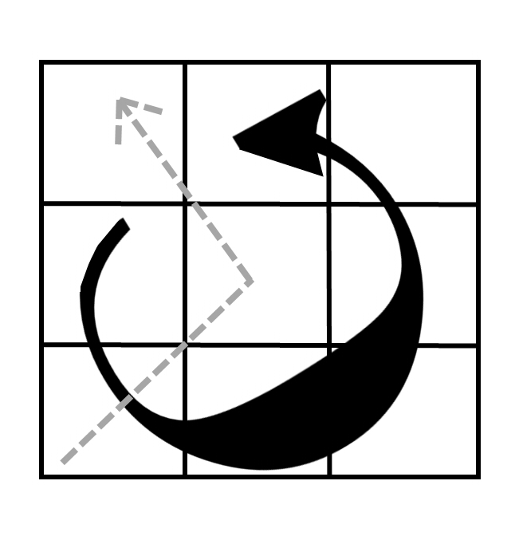

大砲の使い方
よくよく見たらこんなところに大砲が破壊されずに残っている…。
何かで使えそうだが…、少し仕組みが複雑そうだ。
照準を合わせる盤面があるな。この矢印は何だろう。
なるほど、これを動かせばいいのか。あとはどうやって使うかだが…
頭を使うしかないようだな…
--------------------------------------------------------------------------------------------------------------------
